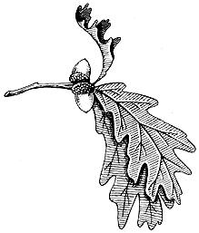
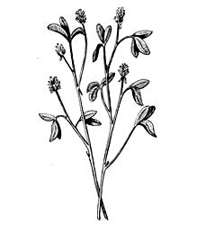
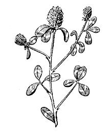
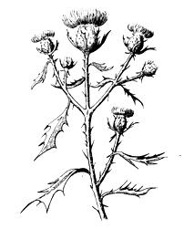
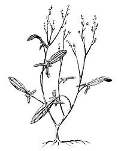
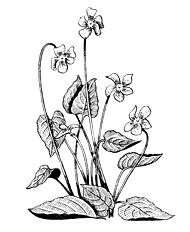

May is a time of abundance here in Wisconsin. The bitter cold and snows of winter are gone and all but forgotten. April rains have soaked the earth and awakened wild plants that-warmed by the gentle May sun-are absorbing minerals and manufacturing vitamins that will keep a food forager clear-eyed and strong.
Some of this fare that we find and make much use of are alfalfa, clover, thistles, violets and sorrel. Occasionally we even go into the forest to pick a basket of fern shoots.
Alfalfa and clover, of course, are hay plants raised by commercial farmers for animal food. This makes finding them easy since they grow almost everywhere. Alfalfa has been raised since long before recorded history and it probably was originally gown for human food. Well it might be too since - in addition to protein - alfalfa is a very good source of iron, magnesium, phosphorus, sulphur, sodium, potassium chlorine and silicon. These are called trace elements and are often lacking in shallow rooted plants but alfalfa - which can send its tap roots to a depth of fifty feet - is unusually rich in these nutrients. The plant is also one of the best sources of vitamin K and contains enzymes that help the body to absorb other foods. Nursing mothers can increase their flow of milk by eating raw alfalfa or food containing the powdered plant.
For wilted alfalfa pick, wash and chop two cups of the fresh plant and place in a frying pan. Pour two teaspoons of vegetable oil or bacon grease into the pan and add salt if desired. Heat and stir until the leaves have wilted. Eat immediately.
Alfalfa and whole wheat bread is a recipe that uses dried alfalfa leaf flour. This flour can be purchased or you can make your own by drying fresh alfalfa leaves in a warm room or in a very slow oven until they're brittle enough to powder between your fingers. We make powder by hand or use our Corona Grain Mill set very fine to reduce the dried leaves to flour.
Measure out five cups whole grain wheat flour and 1/2 cup alfalfa flour. Combine two cups scalded milk, 1-1/2 tablespoons bacon grease, one tablespoon salt and six tablespoons molasses or honey. Dissolve one cake yeast in 1/4 cup lukewarm water and add two tablespoons of brown sugar. Combine all ingredients and stir very well. Knead slightly and place in a greased bowl in a warm room until it doubles in bulk. Put the dough into two bread pans and let it rise again until it doubles in bulk. Place in oven and bake at 375 degrees for 20 minutes. Reduce the heat then to 325 degrees and bake until done . . . about 80 minutes in all. This bread should contain enough vitamins and minerals to fill an entire specification book.
Alfalfa flour can be sprinkled into soup or it can be eaten raw. Many purists nibble the plant from hand right out in the fields or after dipping it in salt water. Alfalfa also combines well with other greens and it can be used with clover to make a very appetizing salad.
Pick and chop one cup of alfalfa and one cup white or fed clover. Find some sorrel or grape leaves if you can and chop and toss in enough of either or both to give the salad a tang. Now toss and add - a teaspoonful at a time - bacon grease or other dressing to give your salad the flavor you like.
Unlike alfalfa, clover can often be found growing in wilderness areas . . . especially along logging roads and in small clearings. Once, when I was fairly inexperienced in finding edible wild plants, I went on a solo three day "travel light and live off the land" backpack trip into the Nicolet National Forest in Northern Wisconsin. On my second day with little food I crossed a huge marsh, ciimbed the hill on the other side and happened onto a patch of white clover and sorrel growing side by side. I dropped my pack right there and - pulling handsful of clover with one hand and sorrel with the other - chewed as fast as I could until the hollow in my stomach was filled. I've never since passed a patch of white clover in the wilderness without the warm feeling of seeing an old friend.
Clover can be used in soups, vinegar and cough medicine. The soup is made by adding a few fresh or dried leaves of the plant to a beef stock soup. We don't overdo this however. A small handful of leaves to a large pot of soup is enough to start with. After tasting the soup, we add more if desired. Too much will cause the dish to taste like weeds.
I've heard that vinegar can be made by pouring 1-1/2 gallons of boiling water over one gallon of tightly packed red clover blooms. Let the mixture stand overnight and strain out the blossoms. Add one pound of brown sugar and 1-1/2 pints molasses. Dissolve one cake yeast in 1/2 pint water and add that also. Place the mixture in a stone crock and let it stand in a warm room until it sours. This takes awhile as the sugar must turn to alcohol and the alcohol to acetic acid. One thing that might speed the process is a very large stone crock that exposes more of the solution to the air.
Make cough medicine by adding one cup fresh red clover blossoms to a pint of boiling water. Let it steep in a covered earthen crock until cool and add one tablespoon honey. Take a teaspoonful to control cough from colds, whooping cough, virus, etc.
If you're still not convinced that clover is a valuable wild plant consider that Nebuchadnezzar II, King of Babylon, would wander into the fields and eat handfuls of clover when the pressures of ruling got too great. After a few days he would return, much refreshed, and make some of his most brilliant decisions. Might help at tax time.
When we're gathering clover in our area we inevitably back into or set down on a plant that is well protected by nature: the thistle. Most grazing animals and people take whatever steps are necessary to avoid thistles but we don't because we know that the Canadian Thistle (cirsium arvense) and the Bull Thistle (cirsium lanceolatum) make good food. Even the sharp thorns are edible after they boil awhile.
Bull and Canadian Thistles spring up here in amazing profusion. I've heard that the county has one pseudo-bureaucrat who's sole duty in the summer is to see that people cut their thistles before the plants go to seed. I wish him well because - to find all the young tender thistles I want for greens - all I have to do is watch for his signs posted along the highways. Somewhere very near there's certain to be a good patch of young thistles just waiting to be made into boiled or creamed greens.
I try to get young thistles when they're less than six inches tall and cutting the plants involves some skillful manipulation or the wearing of leather gloves. Sometimes a bunch of thistles will seem to be alive the way they porcupine around to stab you when you're not watching and I place mine in a bag or box for carrying.
I boil the chopped plants until their thorns are soft and salt and serve them when the thistles are well cooked. The first time you try eating the plant this way you'll feel like Superman when you nonchalantly chomp down what - a few minutes before - was a stabbing mess of needle-sharp thorns. Thistles also make good creamed or wilted greens but, because of the broth-like consistency they give to water, I feel they make the best soup of any green plant.
Make thistle soup by chopping (scissoring would be a better word since an old pair of shears is the best thing I've found for cutting up green plants) a pan of thistles. Push them down in the pan and add just enough water to cover the plants. Bring to a boil and let simmer for at least twenty minutes. Now you can season this soup and eat it just as it is or you can add some boiled fish, leftover rice or anything else you happen to have. It's guaranteed to be good and you can use this stock in stew.
Chop and boil about six thistles until the water has absorbed most of the juice from the plants. As they're boiling, add water as needed until you have two quarts of very dark green juice or soup stock. Remove the plant parts and set aside for use as creamed greens. Add to the two quarts of stock, two wild onions - tops and all - or medium chopped domestic onion bulbs. Use less if you like only a mild onion taste. Now add 1/2 pound of fish and 1/2 pound meat. The combination of meat and fish that I like best is 1/2 pound diced browned venison shin and 1/2 pound fillet of bullhead. If you're still city bound, use 1/2 pound fish or fish heads and six to eight chicken feet or one package of chicken necks or backs.
Chicken feet are rumored to be available at very small cost in some city meat markets and I hear many people buy them for "dog food". This is the best part of the chicken for making soup but the feet do require parboiling for three minutes to remove their scaly skin before they're placed in the soup. The feet also can be chopped after parboiling and before being put into the stock.
Anyway , when you finally have your meat and fish placed in the soup, add two cups cleaned and peeled arrow head tubers or chopped potatoes, a few leaves of sorrel and 1/2 cup chopped cattail stems or celery stalks. Bring to a boil, season well and simmer for about two hours. Taste before removing from the fire and add seasoning if desired. If anyone can think of a way to make a soup as good tasting and nutritious as this for as little as this one costs I would certainly like to hear about it.
The thistle parts we set aside can be made into creamed greens. Chop or blend the cooked thistle until it is as fine as puree. Place in a saucepan over a slow fire, add three tablespoons butter or bacon grease and add one or two small onions, tops and all. Stir in 2-1/2 tablespoons of cattail or wheat flour and add one cup of milk or milk substitute. Stir and cook until all the ingredients are well blended. Crumble in some crisp bacon if you have it and serve.
When we gather thistles we try not to forget to pick a good supply of sheep sorrel. Sheep sorrel is another wild plant that was introduced to this country from Europe where it has been raised as a pot herb for centuries.
Sorrel, sheep sorrel, sour grass or red sorrel (Rumex Acetosella) is a low bunch-like plant that grows in acid soil. It has arrow-shaped leaves and shallow, yellowish root stalks. Sorrel can be spotted from long distances by the reddish tinge its seed pods give to the fields in which it grows. The leaves of this perennial plant have a decidedly sour taste and we use only the green leaves as they lose almost everything when dry.
Sorrel combines well with other wild things and a good salad can be made with one cup of sorrel leaves and a cup of fresh dandelion crowns. The crown is the white part of the dandelion between the green part of the leaf and the root. Slice the crown into small pieces and soak out any dirt. Crispen the sections in cold water if necessary. Now add some leaves of the sweet clover (Melilotus Officinalis), too. Not many, just enough to smooth the flavor of the dandelion and sorrel. This salad can be eaten without dressing or it can be tossed with a couple strips of crisp fried bacon, grease and all.
For cream of sorrel soup pick, wash and scissor into small pieces two tightly packed cups of sorrel leaves (strip the leaves from the rib and discard it). Heat four tablespoons of bacon grease or butter. Stir in the scissored sorrel leaves and cook until very well browned, being careful not to burn them. Place in four quart soup pan and add a tablespoon of whole gain wheat flour, 1/4 teaspoon salt and four cups of milk. This can be cow milk, goat milk, soy bean milk or thistle soup stock. Cover the pot and simmer for 1/2 hour. Add black pepper and serve hot.
To brew some sorrel and mint tea, place a double handful of sorrel leaves and a teaspoon of dried mint leaves in a tea pot. Cover with boiling water and let it steep for ten minutes. Drink hot or cold. This tea contains vitamins which will combat intestinal worms, kidney stones and hepatitis. Besides that it's very good, especially if sweetened with one teaspoon of honey to each cup of tea.
Sorrel also can be made into a meat sauce, especially if you have a blender. Dissolve 1-1/2 tablespoons of honey in three tablespoons of hot water. Cool and add 1/2 cup finely chopped sorrel leaves and 1/2 cup apple cider vinegar. Make this early enough so the ingredients can set together for at least 30 minutes (but not more than two hours) before using. Now that we've explored some of sorrel's possibilities let's take a walk into the moist woods where we can find another plant that is just coming into its own for food purposes.
About the middle of May, in the cool forests of Wisconsin, ferns send up their green succulent stems. I know exactly where the fern plantations will be because I spotted them last summer when they were two feet high and so thick that the forest floor wasn't visible.
I first became interested in ferns for food when I read Louise Dickenson Rich's book, We Took To The Woods, many, many years ago. However, I don't think she gave the fern true credit when she said it tasted like a cross between asparagus and swamp water.
I pick ferns when they're about six to ten inches high. They're best before they've unfolded and while their heads are still hanging down in a prayer position. I break the plants off just above the ground and use heads, stems and all. I've heard that the fern leaf, when mature, contains a poison so I don't attempt to use the plants for food after the leaves develop.
v Some people let the ferns develop a little longer and pick them just as the tiny leaves start to emerge. These folks don't use the immature leaves, however. They cut the stalks off just under them and slightly above where the stems are starting to get tough. This makes a finished product that looks like asparagus.
The two species of ferns that I depend on for food are the common bracken fern (Pteridium Aquilinum) and cinnamon fern (Osmunda Cinnamona). Cinnamon fern, of course, is the common "fiddlehead" that is sold commercially along the Atlantic coast. Wherever you live, however, there should be at least one species of this plant that will provide you with tasty "asparagus" in the early spring.
vThe bracken fern matures into a tall, thick-stalked plant with great triangular leaves. It grows - usually on high, well-drained and poorer soil - in huge patches that cover the ground in both fields and forests. Here in Wisconsin, the bracken is often found in cutover areas that have reseeded themselves to poplar trees.
Cinnamon ferns usually grow in rich soil at the edge of or in swamps and wet areas. They're generally later than the brackens due, no doubt, to the longer time it takes for spring to come to the marshlands. The shoots, when they first come up, are reddish and exceedingly hairy with tightly rolled heads. These heads gradually form into upright seed or spore pods and, later, the leaves of the plants come up.
So far as I know there are no poisonous ferns if the new shoots only are eaten. I prepare these plants by pulling the shoots between my fingers to strip away the "wool" and then boiling the stalks in salted water for a few minutes until they're tender. Serve like asparagus with salt and melted butter.
Health food enthusiasts would probably rather steam ferns. To do this, pick, wash and strip a bunch of shoots (a good handful or two pounds). Tie the bunch together and place them stalk down in a large pan or double boiler. Add 1-1/2 inches of water and cover the pan and fern tips with another pan. Bring to a boil and hold for about ten minutes or until the stalks are tender. Remove, drain and keep the liquid. Slice the cooked ferns crossways with a sharp knife, place in a bowl and stir in 1/2 cup chopped hickory nuts, 1/3 cup of vegetable oil and the original liquid from cooking the ferns. Return to the fire warm up to a simmer and hold for five minutes. Pour over thin, whole grain, wheat bread toast.
Almost everyone knows the delightful purple or blue flower of the violet. This flower grows in almost every moist, cool woods in the country and many ladies raise violets in their flower gardens for the delightful color and fragrance of the blossom.
The violet is a very good food plant and has been used since the beginning of records for food and medicine. The whole plant can be eaten: the blossoms in violet jam, the leaves and stalks in salads and the roots - if you care to go to the trouble - roasted. for a vegetable.
v Violet blossoms make a very good drink when mixed with wild honey and sumac juice. Pick any size container full of the blooms. One good way to do this in quantity is to use your fingers, slightly spread and palm up, as a rake to slide through bunches where they grow thickly. Even when the flowers are scattered, however, picking a pint or so is no formidable task. Place the blossoms in an enameled pan, cover with sumac juice which you have measured and bring to a slow boil. When the liquid just starts to roll, add one teaspoon of honey to each cup of liquid. Remove from the fire and set aside to cool and blend for about one hour. Drink hot or cold.
If I have a good handful of violet blossoms left over after preparing this drink I make some violet pudding.
v Place a cup of tightly packed violet blossoms in a tea pot or pan that can be covered. Add 1-1/2 cups of boiling water and let steep until cool. In the meantime, mix together four teaspoons of gelatine and 1/4 cup cold water in a pan. Add 3/4 cup honey, 1/4 teaspoon sea salt and 1/2 cup lemon juice. Now pour the violet tea over the mixture in the pail, place over heat and bring to a boil while stirring constantly. Remove from the fire, cool, pour into a mold and chill until firm.
v Violets can be used in salads also. Cut up leaves - blossoms and all - and mix them into any salad. Or chop leaves and stems only and wilt them in bacon grease over a low fire . . . or just go out in the violet patch and sit down and eat the blooms. Anyway you do it, you'll be getting a prodigious dose of ascorbic acid and vitamin A. Don't presume to eat a year's supply in one day, however, as - like most fresh greens - violets are a mild laxative.
Good luck. See you next issue.
|
 alfalfa |
 clover |
 thistle |
|
 sheep sorrel |
 violets |
 |